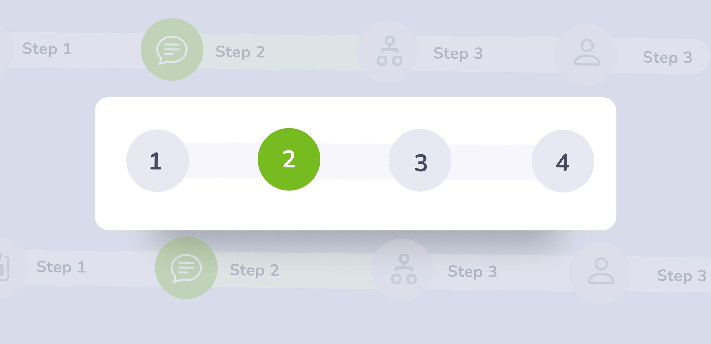
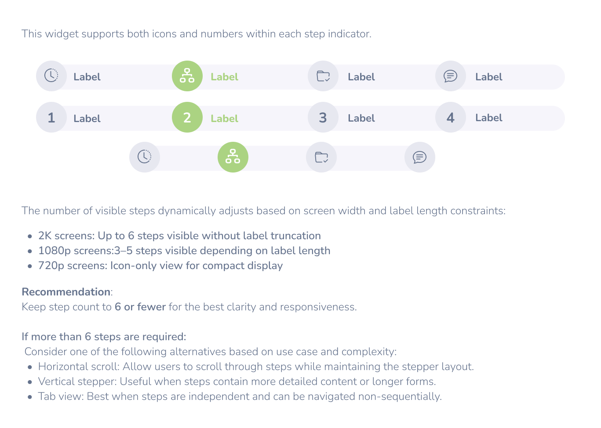
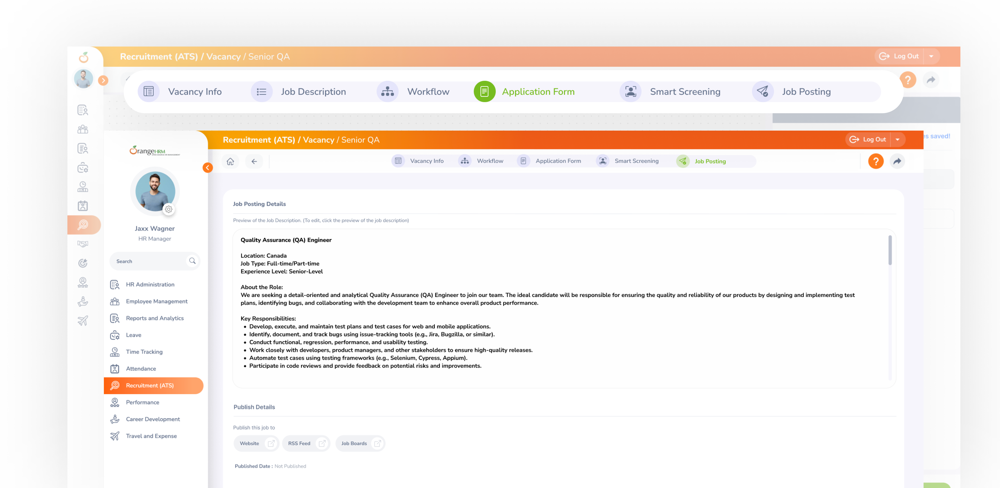
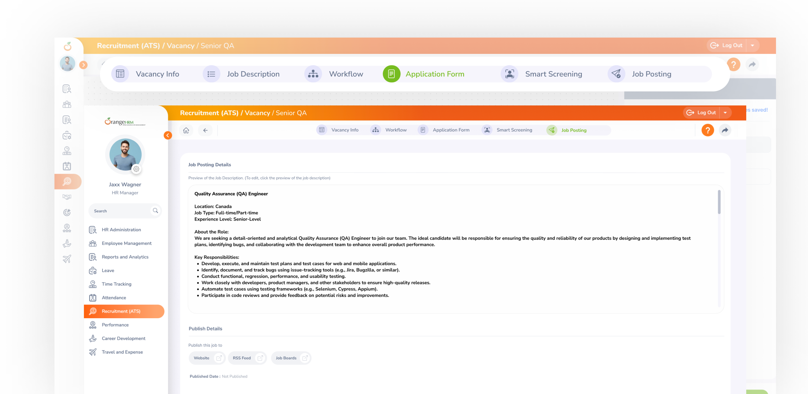

Design
Guide
OXD Introduction
Design Thinking
UX Standards
Visual Design
Grid & Layout
Navigations
Components
 UI Behaviours
UI Behaviours
 QA Standards
UI Standards
QA Standards
UI Standards
Buttons
Text-box
Check-box
Radio
Radio Pils
Switch
Search-box
Multi Select
Dropdown
Number Dropdown
Upload Inputs
Upload input box
Date picker
Time picker
Color picker
Labels
Help Lable
Status lable
Group Input
GroupOverlay
Scroll-bar
Count Slider
Text-aria
Comment-box
Paginations
Card loader
Divider
Tables & List View
Cards & Shapes
Modals & Popups
Advance Components
Charts
OXD Stepper (Multi-Step Indicator)

Stepper is a UI component used to divide a process into clearly defined steps
.oxd-wizard {
display: flex;
align-items: center;
justify-content: center;
container-type: inline-size;
container-name: wizard;
&-tab {
display: flex;
align-items: center;
background-color: #F6F5FB;
width: 200px;
@container wizard (max-width: 1200px) {
width: 160px;
}
@container wizard (max-width: 960px) {
width: 120px;
}
@container wizard (max-width: 720px) {
width: 100px;
&:last-child {
width: 36px;
}
.oxd-wizard-tab-title-container {
display: none;
}
.oxd-wizard-tab-circle-tooltip {
display: block;
cursor: pointer;
&.--not-clickable {
cursor: default;
}
}
&[tooltip]::before,
&[tooltip]::after {
display: none;
}
}
&:first-child {
border-radius: 20px 0 0 20px;
}
&:last-child {
border-radius: 0 20px 20px 0;
}
&-circle {
display: flex;
align-items: center;
justify-content: center;
min-width: 35px;
min-height: 35px;
border-radius: 35px;
position: relative;
&-tooltip {
display: none;
position: absolute;
top: 0;
left: 0;
width: 100%;
height: 100%;
}
&-button {
&.--active {
color: #F6F5FB;
background-color: rgba(118, 188, 33, 0.6);
&:hover {
color: #F6F5FB;
background-color: rgba(118, 188, 33, 0.8);
}
&:focus {
color: #F6F5FB;
background-color: rgba(118, 188, 33, 0.9);
}
}
&:disabled {
color: rgba(100, 114, 140, 0.3);
background-color: rgba(100, 114, 140, 0.1);
cursor: not-allowed;
pointer-events: none;
}
&.--not-clickable {
z-index: 1;
cursor: default;
pointer-events: none;
}
}
}
&-title-container {
transition: width 0.3s;
margin-left: 10px;
margin-right: 10px;
max-width: 100%;
overflow: hidden;
&--title {
width: 100%;
font-weight: 800;
font-size: 14px;
white-space: nowrap;
overflow: hidden;
text-overflow: ellipsis;
&.--active {
color: #76BC21;
}
&.--disabled {
color: rgba(100, 114, 140, 0.3);
cursor: not-allowed;
pointer-events: none;
}
}
}
}
}
Stepper Guidelines

Label Handling
Full Label Mode: Maximum of 20-25 characters.
Truncated Label Mode: If exceeding 20 characters, truncate with ....
Tooltip Support: Hovering over a truncated label should reveal the full text.
If the available width per step is ≤100px, switch to icon-only mode.
Ensure that icon-only mode includes tooltips for accessibility.

When Not to Use
Multi-step processes that require sequential input or actions (e.g., onboarding flow, form wizards, checkout flows).
If users frequently need to jump between steps to compare information — a stepper may make this harder than a flexible layout.
When to Use
When Not to Use
Behavior & Best Practices